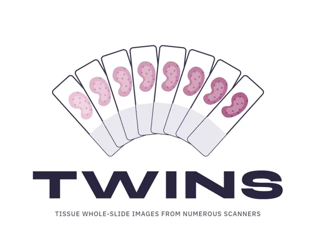

TWINS Collection
A whole-slide collection for studying variation across scanners and tissue structure.
TWINS stands for Tissue Whole-Slide Images from Numerous Scanners. The collection supports the study of how acquisition systems affect the appearance and downstream analysis of digitized histology. Repeated scans of the same slides support comparisons of corresponding tissue regions.
